7 Uncertainty
By the end of this chapter you should gain the following knowledge and practical skills.
- Appreciate the main challenges and objectives of uncertainty representation.
- Learn how visualization techniques can be used to support ‘frequency framing’ – the perception of probability and risk.
- Understand how parameter uncertainty can be estimated computationally.
- Create uncertainty visualizations in ggplot2.
- Generate estimates of parameter uncertainty using bootstrap resampling.
- Apply functional-style programming for working over bootstrap resamples.
7.1 Introduction
Uncertainty is a key preoccupation of those working in statistics and data analysis. A lot of time is spent providing estimates for it, reasoning about it and trying to take it into account when making evidence-based claims and decisions. There are many ways in which uncertainty can enter a data analysis and many ways in which it can be conceptually represented. This chapter focuses mainly on parameter uncertainty: quantifying and conveying the different possible values that a quantity of interest might take. It is straightforward to imagine how visualization can support this. We can use data graphics to represent different values and give greater emphasis to those for which we have more certainty – to communicate or imply levels of uncertainty in the background. Such representations are nevertheless quite challenging to execute. In Chapter 3, we learnt that there is often a gap between the visual encoding of data and its perception and the tendency in standard data graphics to imbue data with marks that over-imply precision. We will consider research in Cartography and Information Visualization on representing uncertainty information, before exploring and applying techniques for quantifying and visually representing parameter uncertainty. We will do so using STATS19 road safety data, exploring how injury severity rates in pedestrian-vehicle crashes vary over time and by geographic area.
7.2 Concepts
7.2.1 Uncertainty visualization
Cartographers and Information Visualization researchers have been concerned for some time with visual variables, or visual channels (Munzner 2014), that might be used to encode uncertainty information. Figure 7.1 displays several candidates. Ideally, visual variables for uncertainty representation should be intuitive, logically related to notions of precision and accuracy, whilst also allowing sufficient discriminative power when deployed in data dense visualizations.
Kinkeldey, MacEachren, and Schiewe (2014) provides an overview of empirical research into the effectiveness of proposed visual variables against these criteria. As intuitive signifiers of uncertainty, or lack of precision, fuzziness (not encoded in Figure 7.1) and location have been shown to work well. Slightly less intuitive, but nevertheless successful in terms of discrimination are size, transparency and colour value. Sketchiness is another intuitive signifier proposed in Boukhelifa et al. (2012). As with many visual variables, sketchiness is probably best considered as an ordinal visual variable to the extent that there is a limited range of sketchiness levels that can be discriminated. An additional feature of sketchiness is its sense of informality. This may be desirable in certain contexts, less so in others (see Wood et al. 2012 for further discussion).
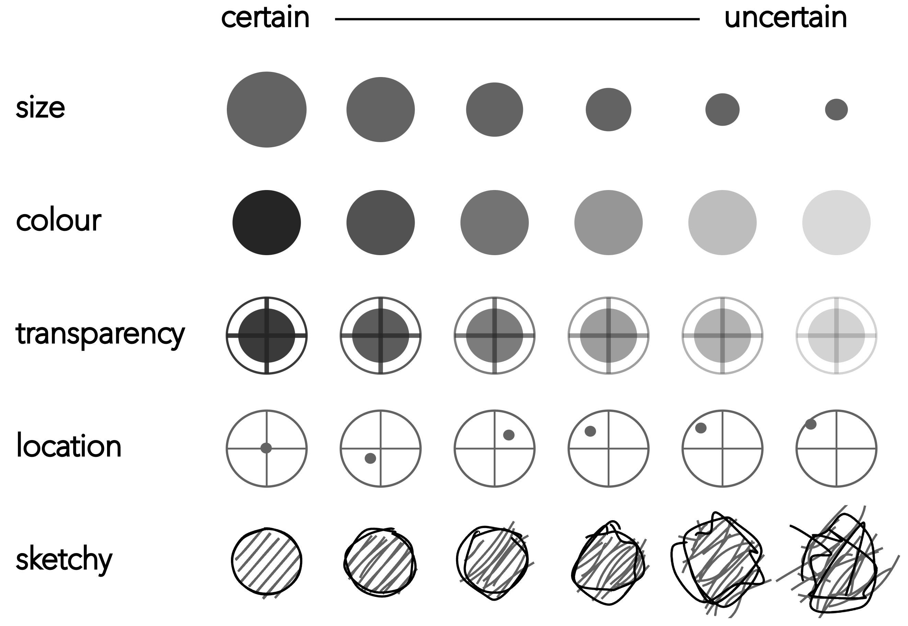
When formulating guidelines for uncertainty visualization, a key maxim is that:
Things that are not precise should not be encoded with symbols that look precise.
A much-discussed example is the National Hurricane Center’s (NHC 2023) cone graphic (Figure 7.2). The cone starts at the storm’s current location and spreads out to represent the projected path of the storm as determined by National Hurricane Center’s modelling. The main problem is that the cone implies the storm is growing as we move away from its current location, when in fact this is not the case. Instead there is more uncertainty in the areas that could be affected by the storm the further away those areas are from the storm’s current location. The second problem is that the cone uses strong lines that imply precision. The temptation is to think that anything contained by the cone is unsafe and anything outside of it is safe. This is of course not what is suggested by the model. Rather, that areas beyond the cone fall outside some chosen threshold probability. You will notice that the graphic in Figure 7.2 (a) is annotated with a guidance note to discourage such false interpretation.
In Van Goethem et al. (2014)’s redesign, colour value is used to represent four binned categories of storm probability suggested by the model. Administrative boundaries in maps tend to induce binary judgements about response based on this context. For example, if the cone is close to but not overlapping a state boundary, a decision might be made not to mount an immediate response to the hurricane. In Figure 7.2 (b), US states are symbolised using a single line, generated via curve schematisation (Van Goethem et al. 2014). This provides context but in a way that may discourage binary thinking. Precise inferences of location are not possible as the area and state borders are very obviously not exact.
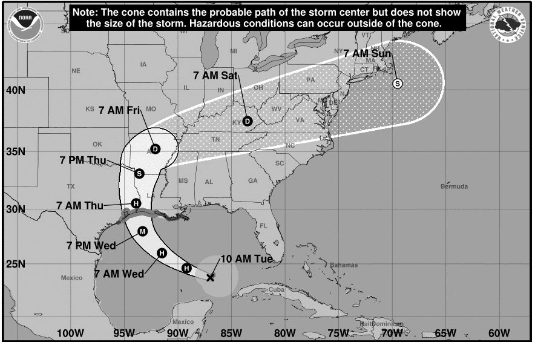
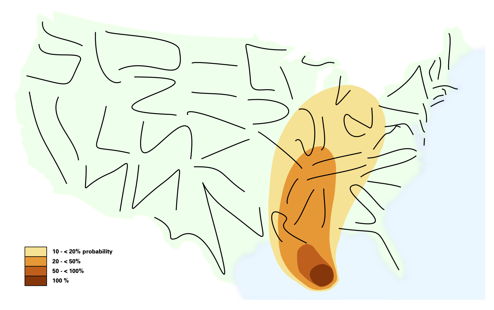
Clearly there are many ways in which uncertainty enters a data analysis. For practical reasons the rest of the chapter considers how these general principles for uncertainty representation might be applied to a single aspect of uncertainty – quantifiable parameter uncertainty. The parameter of interest is estimated injury severity rates for pedestrian-vehicle crashes in our STATS19 road crash dataset.
7.2.2 Frequency framing
Often parameters are represented as probabilities, or relative frequencies – ratios or percentages describing the probability of some event happening. It is notoriously difficult to develop intuition around these sorts of relative frequencies. In the STATS19 dataset, we might wish to compare the injury severity rate of pedestrian-vehicle road crashes – the proportion of all crashes that resulted in a serious injury or fatality (KSI) taking place between two local authority areas, say Bristol and Sheffield. There is in fact quite a difference in the injury severity rate between these two local authority areas in 2019: 35 out of 228 reported crashes (15%) in Bristol were KSI versus 124 out of 248 reported crashes (50%) in Sheffield.
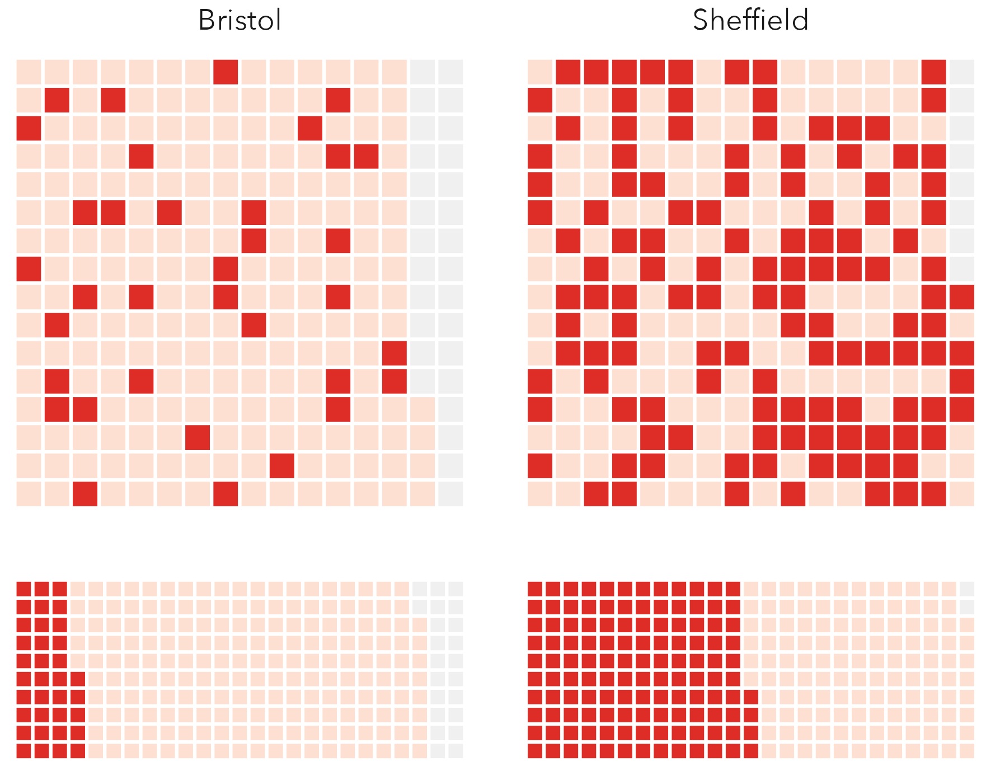
This feels like quite a large difference, but it is difficult to imagine or experience these differences in probabilities when written down or encoded visually using say bar length. Icon arrays are used extensively in health communication and have been demonstrated to be effective at communicating probabilities of event outcomes. They offload the thinking that happens when comparing ratios – the internal weighing up of numerators and denominators. In the example in Figure 7.3, icon arrays are used to compare the two injury severity rates for Bristol and Sheffield. Each crash is a square and crashes are coloured according to whether they resulted in a serious injury or fatality (dark red) or slight injury (light red). In the bottom row, cells are given a non-random ordering, to effect something similar to a standard stacked bar chart. Whilst this layout better supports reading-off the two recorded proportions (15% and 50% KSI), the random arrangement of cells in the icon array perhaps more intuitively communicates the differences in probabilities of a pedestrian crash resulting in serious injury.
There are compelling examples of icon arrays being used in data journalism, most obviously to communicate outcome probabilities in political polling. You might remember that at the time of 2016 US Presidential Election there was much criticism levelled at pollsters, even the excellent FiveThirtyEight, for not correctly calling the result. Huffpost gave Trump a 2% chance of winning the election, The New York Times 15% and FiveThirtyEight 28%. Clearly, the Huffpost estimate was really quite off, but thinking about FiveThirtyEight’s prediction, how surprised should we be if an outcome that is predicted to happen with a probability of almost a third, does in fact occur?
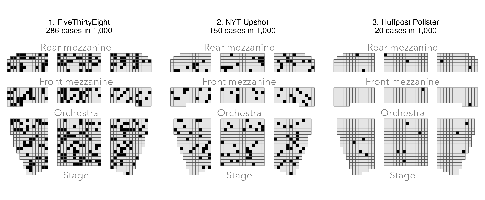
The risk theatre (Figure 7.4) is a variant of an icon array. In this case it represents polling probabilities as seats of a theatre – a dark seat represents a Trump victory. If you imagine buying a theatre ticket and being randomly allocated to a seat, how confident would you be about not sitting in a “Trump” seat in the FiveThirtyEight image? The distribution of dark seats suggests that the 28% risk of a Trump victory according to the model is not negligible.
7.2.3 Quantifying uncertainty in frequencies
In the icon arrays above we made little of the fact that the sample size varies between the two recorded crash rates. Partly this was because the differences were reasonably small. When looking at injury severity rates across all local authorities in 2019, however, there is substantial variation in the rates and sample sizes. Bromsgrove has a very low injury severity rate based on a small sample size (4%, or one out of 27 crashes resulting in KSI); Cotswold has a very high injury severity rate based on a small sample size (75%, or 14 out of 19 crashes resulting in KSI). With some prior knowledge of these areas, one might expect the difference in KSI rates to be in this direction, but would we expect the difference to be of this order of magnitude? Just eight more KSIs recorded in Bromsgrove makes its KSI rate equivalent to that of Bristol’s.
Although STATS19 is a population dataset to the extent that it contains data on every crash recorded by the Police, it makes sense that the more data on which our KSI rates are based, the more certainty we have in them being reliable estimates of injury severity – ones that might be used to predict injury severity in future years. So we can treat our observed injury rates as being derived from samples of an (unobtainable) population. Our calculated injury severity rates are parameters that try to represent, or estimate, this population.
Although this formulation might seem unnecessary, from here we can apply some statistical concepts to quantify uncertainty around our parameter estimates. We assume:
- The variable of interest, KSI rate, has an unobtainable population mean and standard deviation.
- That a sample will consist of a set of observations from this unobtainable population and that these samples could vary in size.
- From any sample we can calculate a mean and standard deviation, which will differ from the population mean and standard deviation.
- That we can derive a sampling distribution and generate an array of estimates that could be obtained from repeating the sampling process many, many times.
- This range of the sampling distribution could then be used to quantify how precise are the estimates. Generally the larger the sampling distribution, the more precise, the less uncertain, the estimate.
In Chapter 6 we used Confidence Intervals to estimate uncertainty around regression coefficients. These described the range of the sampling distribution – the range of values that coefficients estimated from a large number of resamples could take. From early stats courses you might have learnt how these can be calculated using statistical theory. Better still, we can derive these empirically via bootstrapping. A bootstrap resample involves taking a random sample with replacement from the original sample and of the same size as the original sample. From this resample, a parameter estimate can be derived, in this case the KSI rate. And this process can be repeated many times to generate an empirical sampling distribution for the parameter. The standard error can be calculated from the standard deviation of the sampling distribution. Bootstrapping is a really useful procedure, especially in exploratory analysis (Beecham and Lovelace 2022): it can be applied to almost any sample statistic, makes no distributional assumptions and can work on quite complicated sampling designs.
Presented in Figure 7.5 are KSI rates with error bars used to display 95% Confidence Intervals generated from a bootstrap procedure in which 1000 resamples were taken with replacement. Upper and lower limits were lifted from .025 and .975 percentile positions of the bootstrap sampling distribution. Assuming that the observed data are drawn from a wider (unobtainable) population, the 95% Confidence Intervals demonstrate that whilst Cotswold recorded a very large KSI rate, sampling variation means that this figure could be much lower (or higher), whereas for Bristol and Sheffield, where our KSI rate is derived from more data, the range of plausible values that the KSI rate might take due to sampling variation is much smaller – there is less uncertainty associated with their KSI rates.
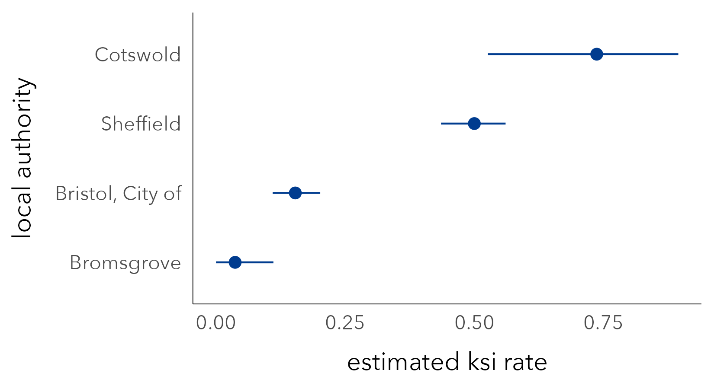
7.2.4 Visualizing uncertainty in frequencies
Error bars, like those in Figure 7.5, are a space-efficient way of conveying parameter uncertainty. However, remembering our maxim for uncertainty visualization – that things that are not precise should not be encoded with symbols that look precise – they do have problems. The hard borders can lead to binary or categorical thinking (see Correll and Gleicher 2014). Certain values within a Confidence Interval are more probable than others and so we should endeavour to use a visual encoding that reflects this. Matt Kay’s excellent ggdist package extends ggplot2 with a range of chart types for representing these sorts of intervals. In Figure 7.6 error bars are replaced with half eye plots and gradient bars, which give greater visual saliency to parameter estimates that are more likely.
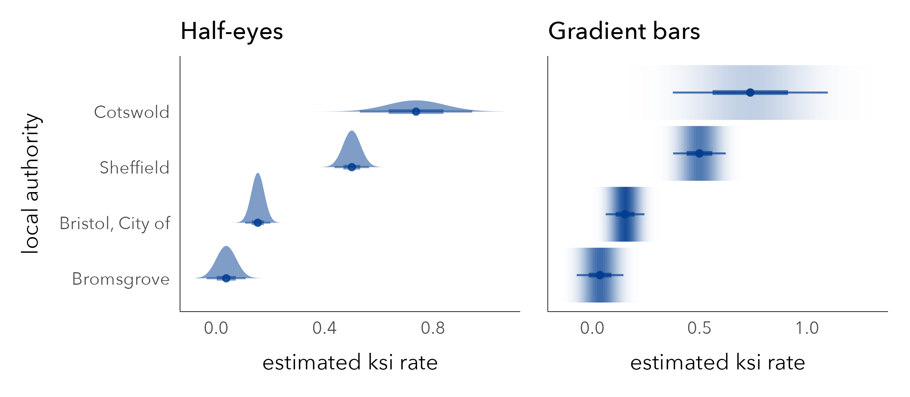
STATS19 road crash data are released annually, and given the wide uncertainty bands for some local authorities it might be instructive to explore the stability of local authority KSI rates year-on-year. In Figure 7.5 these KSI rates are represented with a bold line and the faint lines are superimposed bootstrap resamples. The lines demonstrate volatility in the KSI rates for Cotswold and Bromsgrove due to small sample sizes. The observed increase in KSI rates for Sheffield since 2015 does appear to be a genuine one, although may also be affected by uncertainty around data collection and how police record injury severity.
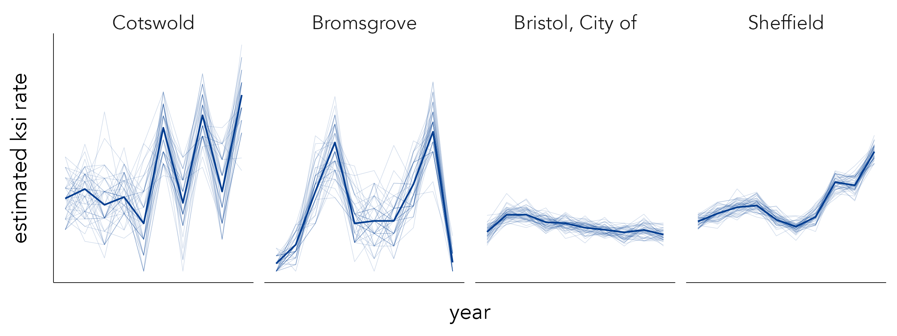
The superimposed lines in the figure above are a form of ensemble visualization. An alternative approach might have been to animate over the bootstrap resamples to generate a Hypothetical Outcome Plot (HOP) (Hullman, Resnick, and Adar 2015). HOPs convey a sense of uncertainty by animating over random draws of a distribution. As there is no single outcome to anchor to, HOPs force viewers to account for uncertainty, recognising that some less probable outcomes may also be possible – essentially to think distributionally.
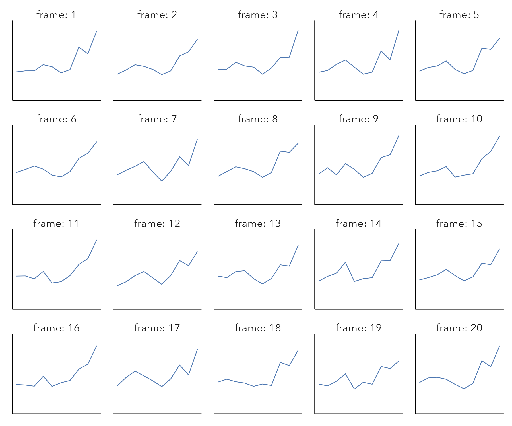
7.2.5 Multiple comparisons
In road safety monitoring, a common ambition is to compare crash rates across local authorities. This is in order to make inferences around patterns of high and low injury severity rate. We might represent injury severity rates as Risk Ratios (RR) comparing the observed injury severity rate in each local authority to a benchmark, say the injury severity rate we would expect to see nationally. RRs are an intuitive measure of effect size: RRs >1.0 indicate that the injury severity rate is greater than the national average; RRs <1.0 that it is less than the national average. As they are a ratio of ratios, and therefore agnostic to sample size, RRs can nevertheless be unreliable. Two ratios might be compared that have very different sample sizes and no compensation is made for the one that contains more data.
We can use quantitative measures to adjust for this. In the example in Figure 7.9 we use hierarchical modelling to shrink local authority KSI rates towards the global mean (national average KSI rate) where they are based on small numbers of observations (see Beecham and Lovelace 2022). From here our effect sizes, called Bayesian Risk Ratios, are sensitive to uncertainty since they are made more conservative where they are based on fewer observations. In the top of Figure 7.9 confidence intervals are built around Bayesian RRs for each local authority is represented with a | icon: >1.0 angled to the right /, <1.0 to the left \. Additionally, we use bootstrap resampling to derive a Confidence Interval for our Bayesian RRs. If this interval does not cross 1.0, the RR is judged statistically significant and is coloured according to whether estimated RRs are above (/) or below (\) expectation.
Figure 7.9 demonstrates that injury severity are spatially dependent and that London appears categorically distinct; each of its 33 boroughs exhibits below expectation injury severity rates. It makes sense that London boroughs might contain context very different from local authorities in other parts of the the country. In order to partially capture this context, we create a population density variable based on a mix of workday and residential populations in local authorities and update our Bayesian RRs on this – they now encode whether observed injury rates are above or below expectation, net of differences in population density.
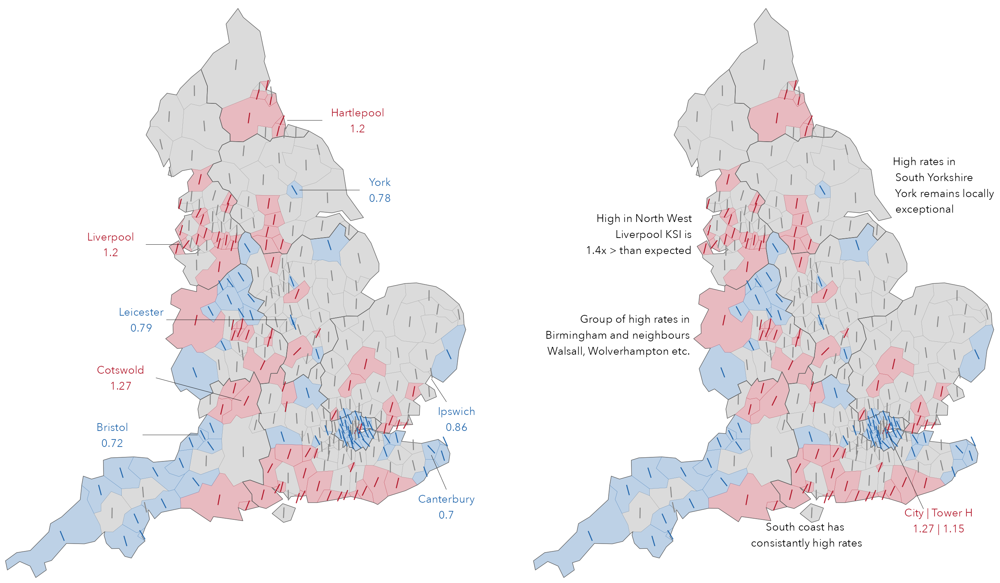
From Figure 7.9 we make inferences around concentrations of high and low injury severity rate (in the annotations). A problem with this approach, and explicitly encoding ‘statistical significance’ values, is one familiar to statisticians but that is rarely addressed in visual data analysis: the multiple comparison problem. Whenever a statistical signal is identified, there is a chance that the result observed is in fact a false alarm. In the plot above which uses a 90% confidence level, the “false positive rate” is expected to be 10% or 1/10. When many tests are considered simultaneously, as in Figure 7.9, the number of these false alarms begins to accumulate. There are corrections that can be applied for this: test statistics can be adjusted and made more conservative. But these corrections have consequences. Too severe a correction can result in statistical tests that are underpowered and result in an elevated false negative rate, where a statistical test fails to detect an effect that truly exists. See Brunsdon and Charlton (2011) for an interesting discussion of this in the context of mapping crime rates.
So there is no single solution to this multiple comparison problem, which happens often in applied social science analysis, especially in Geography, where health and other outcomes are mapped visually. Presenting the RRs in their spatial context, and providing full information around RRs that are not significant (the oriented lines), helps with making uncertainty type judgements. For example, we can attach more certainty to RRs that are labelled statistically significant and whose direction is consistent with its neighbours than those that are exceptional from their neighbours. Additionally, constructing a graphical line-up test (Wickham et al. 2010) to explore whether the sorts of spatial patterns in RR values in the observed data are genuine or might appear in random decoy maps. Although informal, this sort of visual test seems to approximate to the type of reasoning that decision-makers wishing to identify geographic areas for policy attention may use.
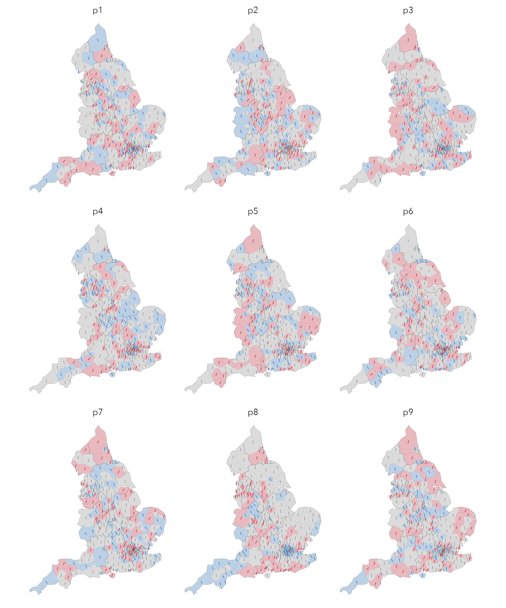
7.3 Techniques
The technical element demonstrates how some of the uncertainty estimates in the chapter can be reproduced. We will again make use of functional programming approaches via the purrr package, most obviously for generating and working over bootstrap resamples.
7.3.1 Import
- Download the 07-template.qmd file for this chapter and save it to your
vis4sdsproject. - Open your
vis4sdsproject in RStudio and load the template file by clickingFile>Open File ...>07-template.qmd.
The template file lists the required packages – tidyverse, sf, tidymodels (for working with the bootstraps), ggdist and distributional for generating plots of parameter uncertainty and gganimate for the hypothetical outcome plot. Code for loading the STATS19 pedestrian crash data is in the 07-template.qmd file.
7.3.2 Plot icon arrays
Icon arrays can be generated reasonably easily in standard ggplot2 using geom_tile() and some data generation functions. The most straightforward approach is to generate icon arrays in a regularly-sized grid. In the example, KSI rates in Fareham (41%) and Oxford (17%) are compared.
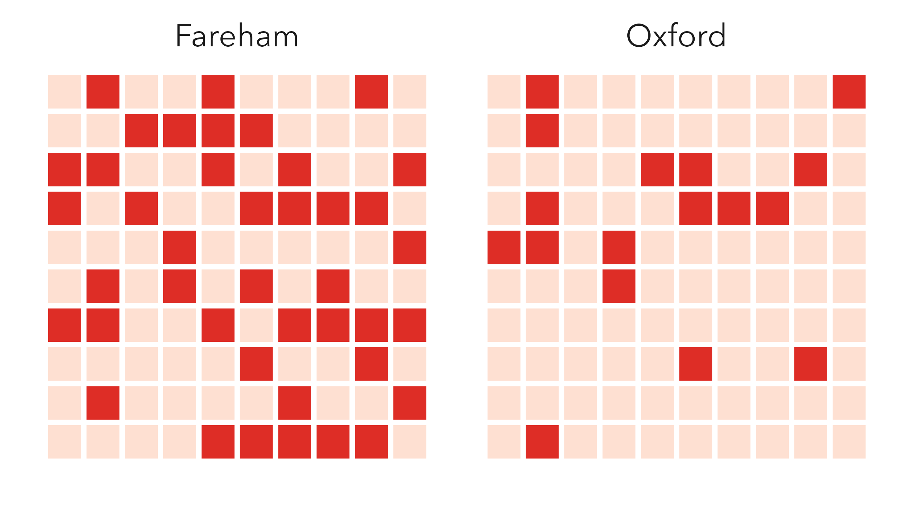
First we generate the array data: a data frame of array locations (candidate crashes) with values representing whether the crash is slight or KSI depending on the observed KSI rate. In the code below, we set up a 10x10 grid of row and column locations and populate these with values for the selected local authorities (Oxford and Fareham) using base R’s sample() function.
The plot code is straightforward:
Plot specification:
-
Data: The array data, with
pivot_longer()so that we can facet by local authority. - Encoding: x- and y-position according to the array locations and filled on whether the sampled crash is KSI or slight.
-
Marks:
geom_tile()for drawing square icons. -
Scale:
scale_fill_manual()is supplied with values that are dark (KSI) and light (slight) red. -
Facets:
facet_wrap()for faceting on local authority. -
Setting: Tiles are given large, white borders (
geom_tile(colour="#ffffff", size=1)).
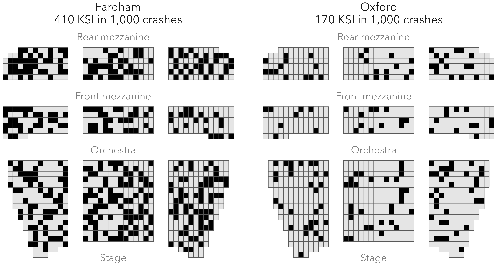
To present the icon array as a risk theatre, we have created a shapefile containing 1,000 theatre seat positions. To randomly allocate KSIs to seats on the proportion with which those crashes occur, we use the slice_sample() function.
theatre_cells <- st_read("data", "theatre_cells.geojson"))
ksi_seats <- bind_rows(
theatre_cells |> slice_sample(n=170) |>
add_column(la="Oxford\n170 KSI in 1,000 crashes"),
theatre_cells |> slice_sample(n=410) |>
add_column(la="Fareham\n410 KSI in 1,000 crashes")
)The code:
plot <- theatre_cells |>
ggplot() +
geom_sf() +
geom_sf(
data=ksi_seats,
fill="#000000"
) +
annotate("text", x=23, y=1, label="Stage", alpha=.5) +
annotate("text", x=23, y=21, label="Orchestra", alpha=.5) +
annotate("text", x=23, y=31, label="Front mezzanine", alpha=.5) +
annotate("text", x=23, y=42, label="Rear mezzanine", alpha=.5) +
facet_wrap(~la)Plot specification:
-
Data:
theatre_cellscontains geometry data for all 1,000 seats;ksi_seatscontains the randomly sampled seat locations. -
Marks:
geom_tile()for drawing seat icons. -
Facets:
facet_wrap()for faceting on local authority. -
Setting: KSI tiles are coloured black (
fill="#000000"). Alsoannotate()blocks of the theatre,x- andy- placement is determined via trial-and-error.
7.3.3 Generate bootstrap estimates of parameter uncertainty
The code for generating bootstrap resamples, stored in rate_boots, initially looks formidable. It is a template that is nevertheless quite generalisable, and so once learnt can be extended and applied to suit different use cases.
rate_boots <- ped_veh |>
mutate(
is_ksi=accident_severity!="Slight",
year=lubridate::year(date)
) |>
filter(year==2019,
local_authority_district %in% c("Bristol, City of",
"Sheffield", "Bromsgrove", "Cotswold")
) |>
select(local_authority_district, is_ksi) |>
nest(data=-local_authority_district) |>
mutate(la_boot=map(data, bootstraps, times=1000, apparent=TRUE)) |>
select(-data) |>
unnest(la_boot) |>
mutate(
is_ksi=map(splits, ~ analysis(.) |> pull(is_ksi)),
ksi_rate=map_dbl(is_ksi, ~mean(.x)),
sample_size=map_dbl(is_ksi, ~length(.x))
) |>
select(-c(splits, is_ksi))Code description:
-
Setup: The first mutate is straightforward – a binary
is_ksivariable identifying whether a crash is KSI and extract the year from the crashdate. Crashes recorded in 2019 are then filtered, along with the four comparator local authorities. To generate bootstrap resamples for each local authority, wenest()on local authority. You will remember thatnest()creates a special type of column (alist-column) in which the values of the column is a list of data frames – in this case the crash data for each local authority. So running the code up to and including thenest(), a data frame is returned which contains four rows corresponding to the filtered local authorities and alist-columncalleddata, each element of which is a data frame of varying dimensions (lengths) depending on the number of crashes recorded in each local authority. -
Generate bootstraps resamples: In the
mutate()that followspurrr’smap()function is used to iterate over the list of datasets and thebootstraps()function to generate 1,000 bootstrap resamples for each nested dataset. The new columnla_bootis alist-columnthis time containing a list of bootstrap datasets. -
Calculate sample estimates: We
unnest()thela_bootcolumn to return a dataset with a row for each bootstrap resample and alist-columnnamedsplitswhich contains the bootstrap data. Again wemap()over each element ofsplitsto calculate theksi_ratefor each of the bootstrap datasets. The first call tomap()extracts theis_ksivariable; the second is just a convenient way of calculating a rate from this (remembering thatis_ksiis a binary variable); the third collects the sample size for each of the bootstraps which of course the number of crashes recorded for each local authority.
7.3.4 Plot parameter estimates with uncertainty information
With ggdist, the code for generating KSI rates with estimates of parameter uncertainty is straightforward and very similar to the error bar plots in the previous chapter.
Plot code:
rate_boots |>
group_by(local_authority_district) |>
mutate(std.error=sd(ksi_rate)) |>
filter(id=="Apparent") |>
ggplot(aes(x=reorder(local_authority_district, ksi_rate), y=ksi_rate)) +
stat_dist_gradientinterval(
aes(dist = dist_normal(mu=ksi_rate, sigma=std.error)),
point_size = 1.5
) +
coord_flip()Plot specification:
-
Data: The
rate_bootsdata frame is grouped by local authority and in themutate()we calculate an estimate of bootstrap standard error, the standard deviation of the sampling distribution, and filter all rows whereid=="Apparent"– this contains the KSI rate for the observed (unsampled) data. -
Encoding: x- position varies according to local authority and y-position according to KSI rate. The estimated KSI rate and bootstrap standard error is also passed to
stat_dist_gradientinterval(), theggdistfunction for producing gradient plots. -
Marks:
stat_dist_gradientinterval()for drawing the gradients and point estimates. -
Setting:
coord_flip()for easy reading of local authority names.
7.3.5 Ensemble plots and hypothetical outcome plots
To generate bootstrap resamples on local authority and year, necessary for the year-on-year analysis, we can use the same template as that for calculating rate_boots, the only difference is that we select() and nest() on the year as well as local_authority_district column.
rate_boots_temporal <- ped_veh %>%
...
... %>%
select(local_authority_district, is_ksi, year) %>%
nest(-c(local_authority_district, year)) %>%
...
...
...The ensemble plot is again reasonably straightforward:
Plot specification:
-
Data: The
rate_boots_temporaldata frame. Note that we include two line layers, one with the observed data (data=. %>% filter(id=="Apparent"), one with the bootstrap data (data=. %>% filter(id!="Apparent"). - Encoding: x- position varies according to year, y-position according to KSI rate.
-
Marks:
geom_line()for drawing lines. -
Facets:
facet_wrap()for faceting on local authority. -
Setting: The bootstrap lines are de-emphasised by making the
alphaandsizechannels very small.
The Hypothetical Outcome Plot (HOP) can be easily created using the gganimate package, simply by adding a call to transition_states() at the end of the plot specification:
rate_boots_temporal |>
filter(id!="Apparent") |>
ggplot(aes(x=year, y=ksi_rate)) +
geom_line(aes(group=id), size=.6) +
facet_wrap(~local_authority_district)+
transition_states(id, 0,1)7.4 Conclusions
Uncertainty is fundamental data analysis. Most statisticians and data scientists exert intellectual effort reasoning about uncertainty, developing quantitive estimates of uncertainty and communicating uncertainty so that it can be taken into account when making evidence-based claims and decisions. Through an analysis of injury severity in the STATS19 road crash dataset, this chapter introduced techniques for quantifying and visually representing parameter uncertainty. There has been much activity in the Information Visualization and Data Journalism communities focussed on uncertainty communication – on developing approaches that promote intuition and allow users to experience uncertainty. We have covered some of these and demonstrated how they could be incorporated into our road safety analysis use case.
7.5 Further Reading
An excellent primer on uncertainty visualization:
- Padilla, L., Kay, M. and Hullman, J. 2021. “Uncertainty Visualization,” in Wiley StatsRef: Statistics Reference Online, ed. B. Everitt N. Balakrishnan T. Colton and J. L. Teugels, Wiley. doi: 10.1002/9781118445112.stat08296.
On visualizing parameter uncertainty:
Correll, M. and Gleicher, M. 2014. “Error Bars Considered Harmful: Exploring Alternate Encodings for Mean and Error,” IEEE Transactions on Visualization and Computer Graphics 20(12): 2142–2151. doi: 10.1109/TVCG.2014.2346298.
Kale, A., Nguyen, F., Kay, M. and Hullman, J. 2019. “Hypothetical Outcome Plots Help Untrained Observers Judge Trends in Ambiguous Data,” IEEE Transactions on Visualization and Computer Graphics, 25(1): 892–902. doi: 10.1109/TVCG.2018.2864909.
On bootstrap resampling with R and tidyverse:
- Ismay, C. and Kim, A. 2020. “Statistical Inference via Data Science: A ModernDive into r and the Tidyverse” CRC Press. doi: 10.1201/9780367409913.
- Chapters 7, 8.